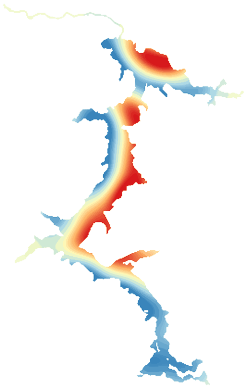

LakeScope › ID
Coeur d'Alene Lake today
Updated 2026-11-21 - Atlas Labs
38°F water, level falling, near normal, calm this morning.
Water level
2120.88 ft
USGS gauge 12415500 - 2026-11-21
7-day trend: falling (-0.32 ft). Compared with normal for this date: +0.4 ft (same weeks, 2016-2025).
Water clarity and algae
No fresh view yet Clouds have hidden the lake lately.
Surface temperature
38°F
seen from space on 2026-11-18

Ice
Open - 0% ice cover
Estimate from weather and satellite, not a measurement. Check the ice yourself before going on it.
Weather, next 3 days
| Day | Sky | High / low | Wind | Rain |
|---|---|---|---|---|
| Saturday | Partly Sunny | 41 / 29°F | 3 mph NE | 1% |
| Sunday | Areas Of Fog | 36 / 28°F | 3 mph E | 68% |
| Monday | Patchy Freezing Fog then Partly Sunny | 38 / 29°F | 3 mph E | 0% |
Sunrise 07:01 - sunset 16:04 - Waxing gibbous. National Weather Service.
Get the LakeScope app: alerts and the 3-D view of Coeur d'Alene Lake